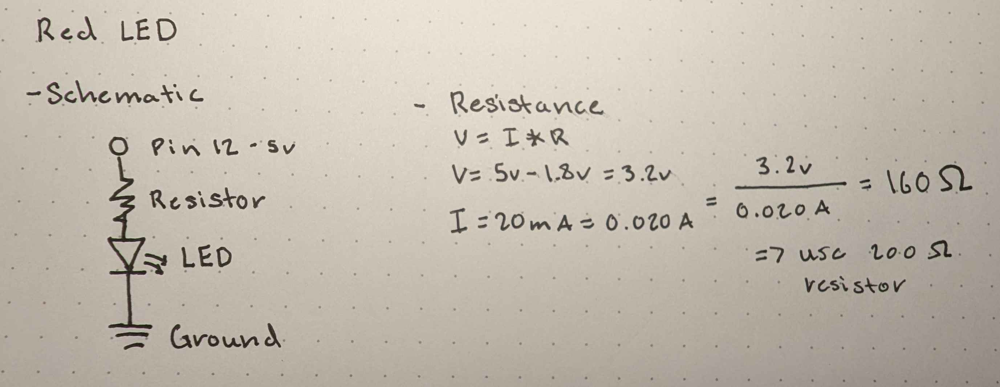

Schematics & Resistors

For both the Green and Red LED schematics, they are connected
to their respective pins (pins 13 and 12), each through a 200-ohm
resistor. With a voltage drop of 1.8 V due to their LED color type,
160 ohms is required. The closest standard resistor value is 200
ohms, which provides some additional leeway.
Code Structure
/*
Octavio Badillo
1/12/2025
A program that blinks 3 LEDs on a breadboard by turning their
respective pins off and on at a specified rate.
*/
// Global Variables
int timer = 10; // Delay time in milliseconds for blinking the LEDs
// Iterates and initializes each respective pin in the pins array
void setup() {
for (int i = 11; i < 14; i++) { // Loop through pins 11, 12, and 13
pinMode(i, OUTPUT); // Set each pin as an output
}
}
// Runs a continuous loop to turn on and off each pin with a specified delay
void loop() {
for (int i = 11; i < 14; i++) { // Loop through pins 11, 12, and 13 in ascending order
digitalWrite(i, HIGH); // Turn the current pin ON
delay(timer); // Wait for the specified delay
digitalWrite(i, LOW); // Turn the current pin OFF
delay(timer); // Wait for the specified delay
}
}
Circuits in Action!

Additional Questions
Q1: Draw a graph where the X axis is time and the Y axis is voltage across the LEDs. Draw a line for each of your 3 LEDs.
Q2: How many LEDs could you blink independently with your Arduino? How much current would that draw?
However, if multiple LEDs were running at the same time, more current would need to be allocated. Referring to the ATmega328P datasheet used in the Elegoo Arduino UNO R3, the total current limit for the VCC and GND pins, which essentially powers and run the entire microcontroller, is 200 mA. Since each LED typically draws 20 mA, a total of 10 LEDs could be powered at the same time, with each LED running independently. Going past this limit could damage the microcontroller permanently.
ATmega328P Datasheet